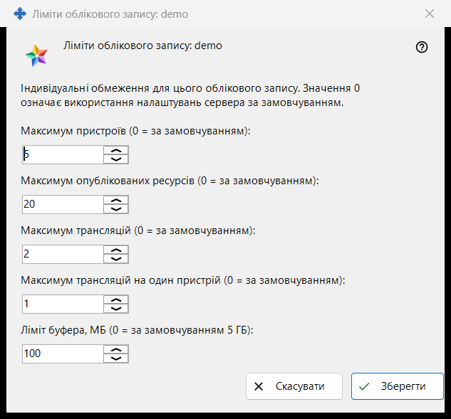
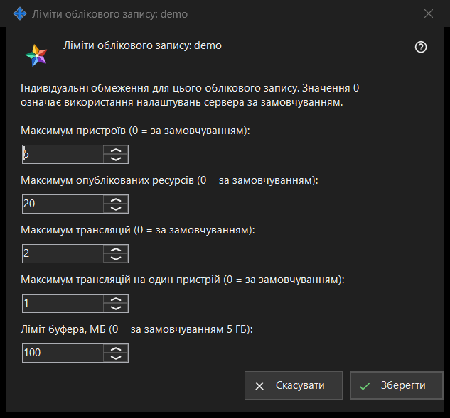

Ліміти облікового запису
Призначення
Задає індивідуальні обмеження для одного облікового запису Media Exchange Server, яким ви керуєте; значення 0 означає налаштування сервера за замовчуванням. Вікно відкривається кнопкою «Ліміти..» під списком облікових записів на сторінці Media Exchange Server у налаштуваннях Share Manager; кнопка з'являється, коли вибрано обліковий запис. У заголовку вікна вказано логін: «Ліміти облікового запису: <логін>».


Порядок дій
- Виберіть обліковий запис і натисніть «Ліміти..».
- Введіть число для кожного обмеження, яке хочете змінити, а для решти залиште 0 (значення сервера за замовчуванням).
- Натисніть «Зберегти».
- Прочитайте рядок підсумку: «Ліміти облікового запису <логін> збережено.»
Елементи вікна
Пристрої та ресурси
«Максимум пристроїв (0 = за замовчуванням):» обмежує кількість пристроїв, які можуть увійти в обліковий запис. «Максимум опублікованих ресурсів (0 = за замовчуванням):» обмежує кількість спільних папок та інших ресурсів, які обліковий запис може опублікувати на сервері.
Трансляції
«Максимум трансляцій (0 = за замовчуванням):» обмежує трансляції всього облікового запису, а «Максимум трансляцій на один пристрій (0 = за замовчуванням):» - те, що може розпочати один його пристрій.
Ліміт буфера
«Ліміт буфера, МБ (0 = за замовчуванням 5 ГБ):» задає найбільший обсяг значення, яке обліковий запис може надіслати у свій буфер обміну на сервері, в цілих мегабайтах. Ліміт, що зберігається в менших одиницях, наприклад 512 КБ, показується як 0 і зберігає точний розмір, якщо ви не змінюєте це поле.
Зберегти та скасувати
«Зберегти» замінює власні ліміти облікового запису цілком: кожне число більше за 0 стає лімітом, кожен 0 означає значення сервера за замовчуванням, а п'ять нулів знімають усі індивідуальні обмеження. «Скасувати» нічого не змінює. Якщо сервер відхиляє значення, рядок підсумку називає причину, наприклад «Ліміт не прийнято: потрібне ціле число в межах, які приймає сервер.»
Налаштування менеджера · Налаштування спільного доступу SFTP · Налаштування сервера обміну